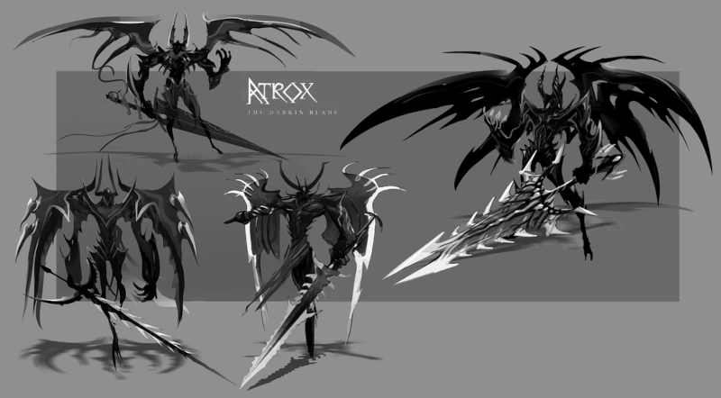
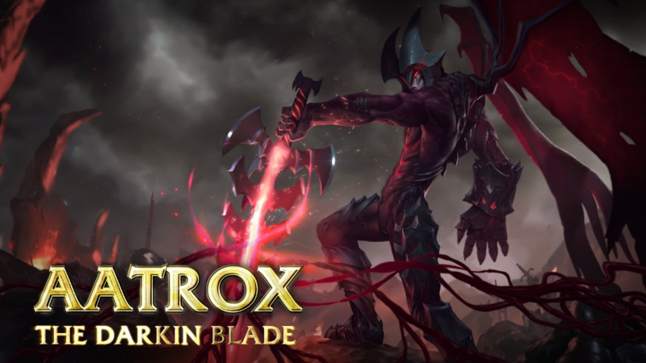
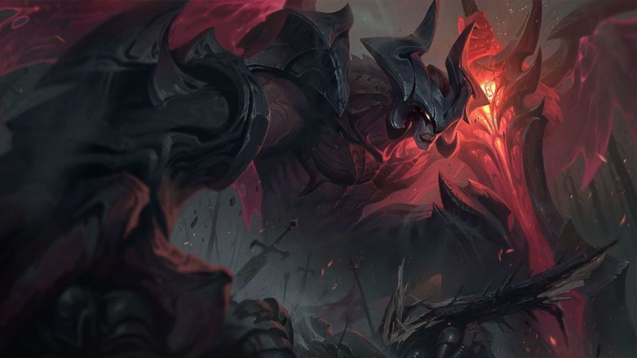

Aatrox - A Espada Darkin
História do Aatrox
Antes defensores honrados de Shurima contra o temido Vazio, Aatrox e sua raça no fim se tornaram uma ameaça ainda maior para Runeterra e a única coisa capaz de derrotá-los foi um tipo de feitiçaria mortal e traiçoeira. Mas após séculos de encarceramento, Aatrox foi o primeiro a encontrar a liberdade novamente, corrompendo e transformando qualquer tolo que tentasse empunhar a arma mágica que continha sua essência. Agora, com um corpo roubado, ele vaga por Runeterra transfigurado, em uma versão bizarra da sua forma anterior, buscando uma vingança apocalíptica.
LER BIOGRAFIA ->
Aparência
Sua forma aprisionada tem a forma de uma espada Aatrox empunhada como um Darkin, uma grande lâmina orgânica vermelha com pontas afiadas e revestimento orgânico que imita o aço. Um coração batendo perto de sua alça é sua própria energia vital, pulsando através da lâmina.
Sua forma física geralmente assume a forma de sua forma Darkin pré-prisioneira. Nesta forma, ele tem uma grande estatura, ficando mais alto que a maioria dos mortais. Sua pele é vermelha, mais brilhante em seu peito, e ele tem conchas de armadura orgânica em várias partes de seu corpo, incluindo seu braço direito, costas, pernas e cabeça. A armadura em sua cabeça forma um capacete com dois grandes chifres, e em suas costas há duas grandes asas que ele costuma usar para se levantar do chão e intimidar as pessoas.
Não se sabe como Aatrox se parecia em sua forma Ascendente, no entanto, sabe-se que ele se parecia com sua forma atual com asas e armadura dourada.
Aatrox - 2013
Aatrox Rework - 2018
Habilidades
Aatrox | Champion Trailer
Então é isso! Espero que você tenha gostado desse meu primeiro artigo com curiosidades e historias dos campeões de League of Legends